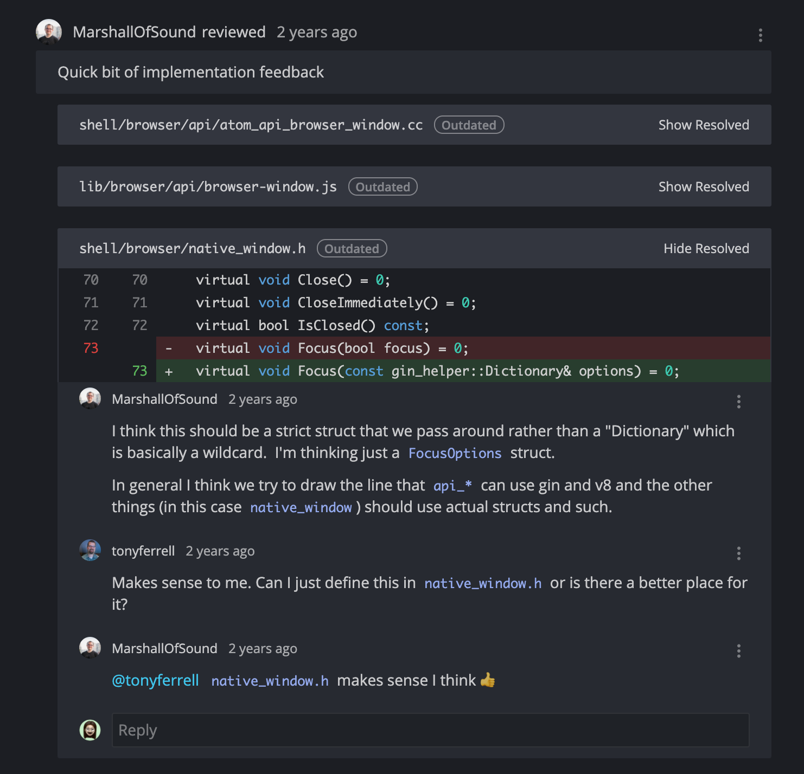
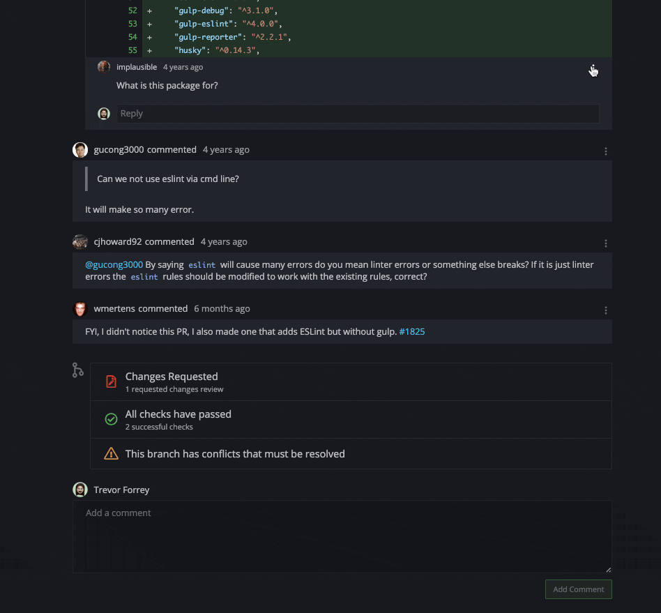
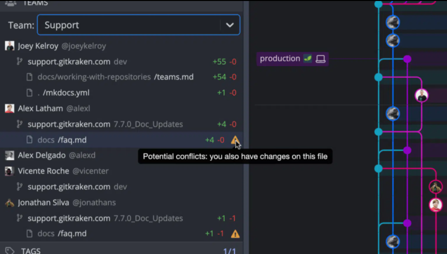
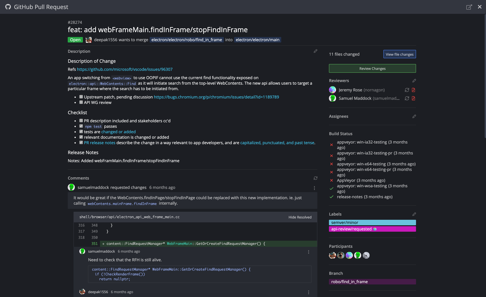
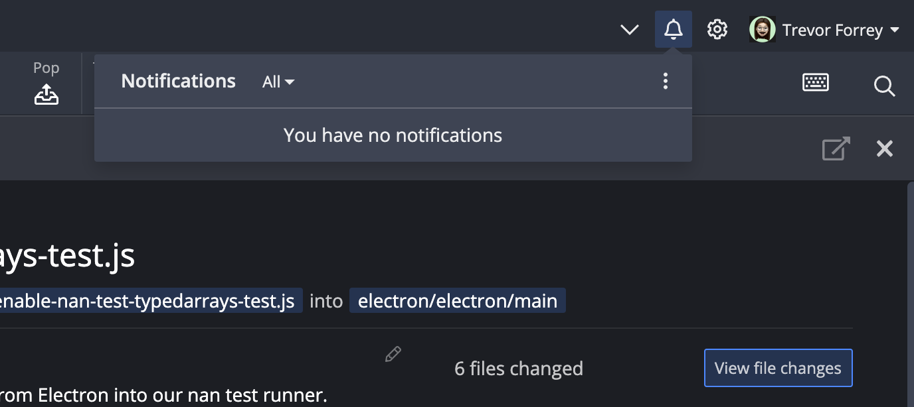
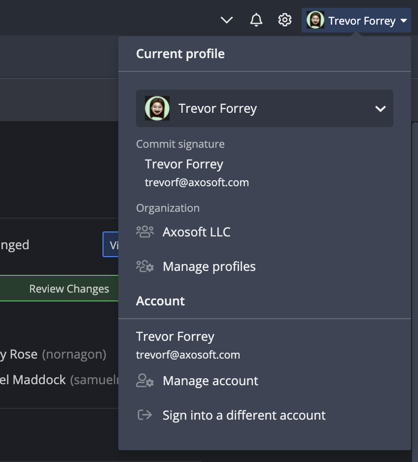
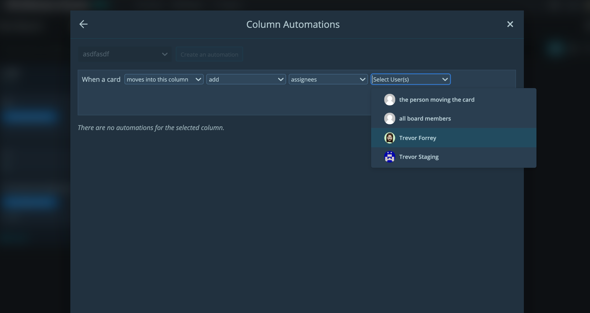
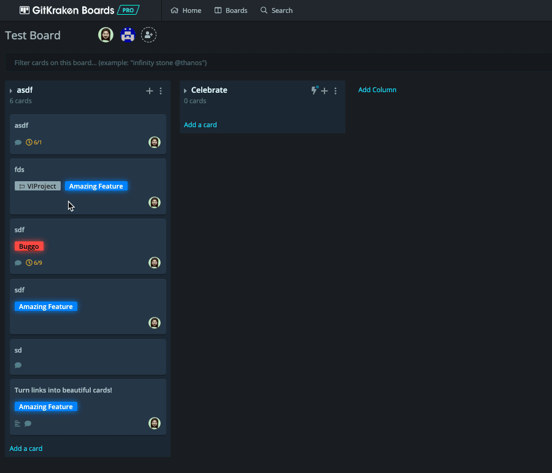
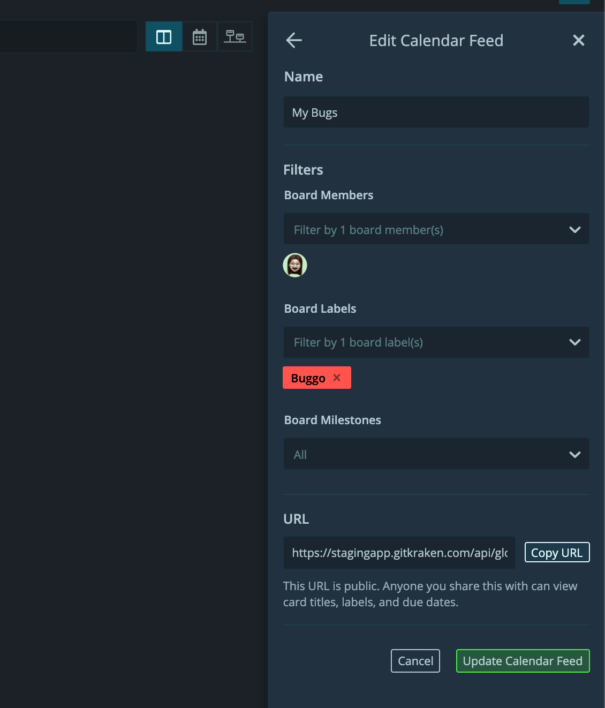
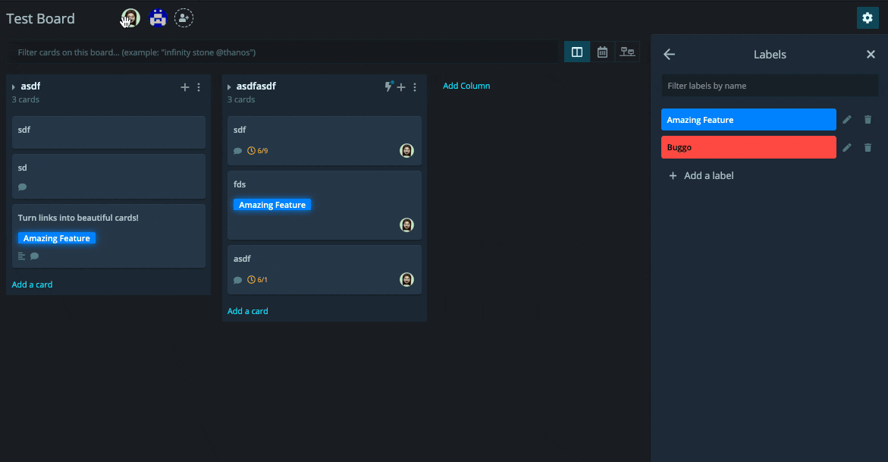

<div class='professional-page'>
  <div class='professional-section'>
    <div class='company-section'>
      {% include professional-project-name.html
        employer-name='Axosoft'
        project-name='GitKraken'
        project-avatar='/assets/img/professional/gitkraken/logo.jpeg'
      %}
      {% include professional-position.html
        position='Software Engineer'
        project-date-range='May 2019 - Present'
      %}
      {% include professional-position.html
        position='Software Engineer Intern'
        project-date-range='January 2019 - May 2019'
      %}
    </div>
    {%
      include professional-product-section-start.html
      project-avatar='/assets/img/professional/gitkraken/logo.jpeg'
      project-name='GitKraken'
      project-date-range='August 2020 - Present'
    %}
    <div class='professional-project-description'>
      <p>I developed multiple features in GitKraken and in the process created many reusable components that have sped up the team's development. Every summer I also mentored interns
        to get them ramped up with our architecture and tech stack.
      </p>
      <div class='professional-list'>
        <span class='list-title'>Projects:</span> <span class='list-result'> Repo Deep Linking, GitHub PR View, Notification System, Teams Visibility Panel, CRM Service, Toolbar Redesign</span>
      </div>
      <div class='professional-list'>
        <span class='list-title'>Technologies and libraries used:</span> <span class='list-result'> React, Flow, Electron, NodeGit, NodeJS, MongoDB, Kafka</span>
      </div>
    </div>
    <div class='professional-scroll gk-scroll'>
      <div class='flex overflow-x-scroll'>
        
        
        
        
        
        
      </div>
    </div>
    {%
      include professional-product-section-start.html
      project-avatar='/assets/img/professional/boards/logo.png'
      project-name='Boards'
      project-date-range='January 2019 - August 2020'
    %}
    <div class='professional-project-description'>
      <p>I developed and maintained multiple features in Boards from ideation, through design and architecture, and implementation.
        I also helped improve all devs' backend workflow by transitioning our local development off docker-compose to each dev having their own
        hot reloading kubernetes cluster.
      </p>
      <div>
        <span class='list-title'>Projects:</span> <span class='list-result'> Automation UI, Boards Slack App, Dashboard Timelines, Calendar Feeds, Drag 'n Drop Card Resources, Card Rendering / Scrolling Perf</span>
      </div>
      <div>
        <span class='list-title'>Technologies and libraries used:</span> <span class='list-result'> React, Typescript, NodeJS, MongoDB, Kafka, Docker</span>
      </div>
    </div>
    <div class='professional-scroll boards-scroll'>
      <div class='flex overflow-x-scroll'>
        
        
        
        
      </div>
    </div>
  </div>
</div>